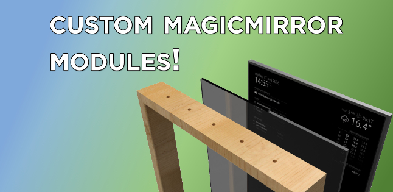

<section id="videos">
  <div class="container" style="padding-top: 60px">
    <hgroup>
      <h2>Featured Videos:</h2>
      <h3>I record helpful stuff for youtube sometimes.</h3>
    </hgroup>
    <article style="margin-top: 0">
      <div class="grid" style="align-items: center">
        <div>
          
        </div>
        <div style="padding: 0 12px">
          <a
            href="https://youtube.com/playlist?list=PLieFqTElnpVztmzQUgxo2elpIFvW6cDNt"
            ><h3>Jekyll Playlist</h3></a
          >
          <p>
            Over 40 minutes installing and exploring Jekyll, the static site
            generator. Here I show users how to create layouts, filter data, and
            much more in 10 videos.
          </p>
          <a
            href="https://youtube.com/playlist?list=PLieFqTElnpVztmzQUgxo2elpIFvW6cDNt"
            role="button"
            >Watch Now</a
          >
        </div>
      </div>
    </article>
    <article>
      <div class="grid" style="align-items: center">
        <div>
          
        </div>
        <div style="padding: 0 12px">
          <a href="https://www.youtube.com/watch?v=gcHI1GOuPfs"
            ><h3>
              MagicMirror Module Development
            </h3></a
          >
          <p>
            I show how to create a simple module,
            starting with just displaying a string then displaying some top
            posts on reddit or a birthday or holiday countdown.
          </p>
          <a href="https://www.youtube.com/watch?v=gcHI1GOuPfs" role="button"
            >Watch Now</a
          >
        </div>
      </div>
    </article>
  </div>
</section>
